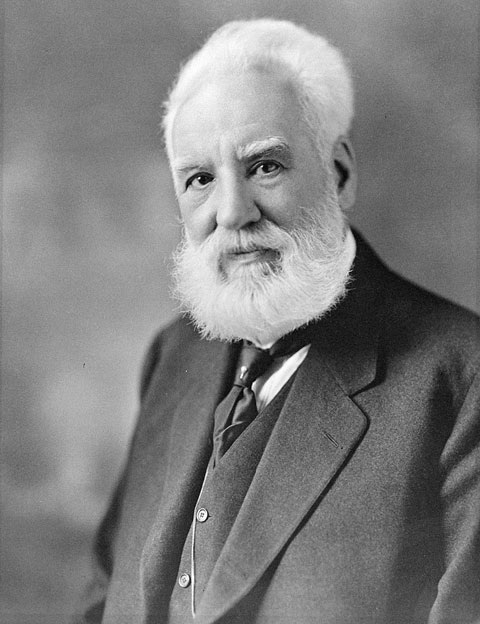

Alexander Graham Bell1847-1922 |
 |
| March 3, 1847 | Alexander Bell is born to Alexander Melville and Eliza Symonds Bell in Edinburgh, Scotland. He is the second of three sons. |
| August,1863 | Bell begins teaching music and elocution at Weston House Academy in Elgin, Scotland, and receives instruction in Latin and Greek for a year |
| Summer, 1867 | Alexander Melville Bell publishes his definitive work on Visible Speech, Visible Speech: The Science of Universal Alphabetics. |
| Born | Alexander Graham Bell born to Alexander Melville and Eliza Symonds Bell in Edinburgh, Scotland. March 3, 1847 |
|---|---|
| Died | August 2, 1922 Bell dies and is buried at Beinn Bhreagh, Nova Scotia |
| Occupation | Bell is a inventor, scientist, and engineer who is credited with inventing and patenting the first practical telephone He also co-founded the American Telephone and Telegraph Company (AT&T) in 1885 Bell, Gardiner Greene Hubbard, Thomas Sanders, and Thomas Watson form the Bell Telephone Company |
| Father | His father, Alexander Melville Bell His grandfather, Alexander Bell |
| Children | Elsie May Bell (1878–1964) Marian Hubbard Bell (1880–1962) Edward in 1881 and Robert in 1883 |
| Cause Of Died | His death was complications from diabetes |